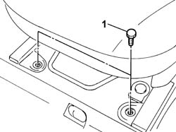
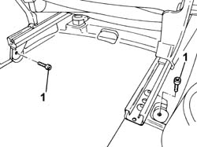

7045A10 l/h or r/h front seat (one) - r+r
- Path
- Procedures > 70 FITTINGS > 7045 FRONT SEATS > 7045A front seat assembly > 7045A10 l/h or r/h front seat (one) - r+r
- Kind
- repair procedure (removal / refitting; the operation number is the code)
- Applies to
- all engines; all production periods
- Interactive page
- https://sloeber94.github.io/elrnDB-fPnd/en/#/2753222
Applies to: all engines; all production periods
 Removing
Removing
 Refitting
RefittingMove the seat back completely.
1. Undo the front bolts fixing the seat to the floor.

Applies to: all engines; all production periods
Move the seat completely forwards.
1. Undo the rear bolts fixing the seat to the floor.

Applies to: all engines; all production periods
Remove the front seat from the vehicle.
Applies to: all engines; all production periods
Refitting
RemovingFit the seat and tighten the rear fixing bolts to the recommended torque.
 | Fastening | Component | Ø | Value (daNm) |
|---|---|---|---|---|
- | Bolt | LH OR RH FRONT SEAT | M8 | (Rear side) 2.4 |
Move the seat back completely.
Tighten the front fixing bolts to the recommended torque.
| Fastening | Component | Ø | Value (daNm) |
|---|---|---|---|---|
- | Bolt | LH OR RH FRONT SEAT | M8 | (Front side) 2.4 |
Topics that link to this page (7)
- 7045A23 front seat mounts - r r
- 7045A39 device for driver`s seat squab lumbar adjustment - r r
- 7045A51 SQUAB LUMBAR REINFORCEMENT ON FRONT SEAT, . (ONE) LEFT or RIGHT - R.R .
- 7045A78 Front seat BACKREST FRAME. (one), left or right - R.R.
- 7045B07 GUIDE BUSH for fixed headrest on one front seat, left or right - R.R.
- 7045B11 FIXED HEADREST of a front seat, left or right - R.R.
- 7045D30 Front seat BACKREST COVER, left or right - R.R.